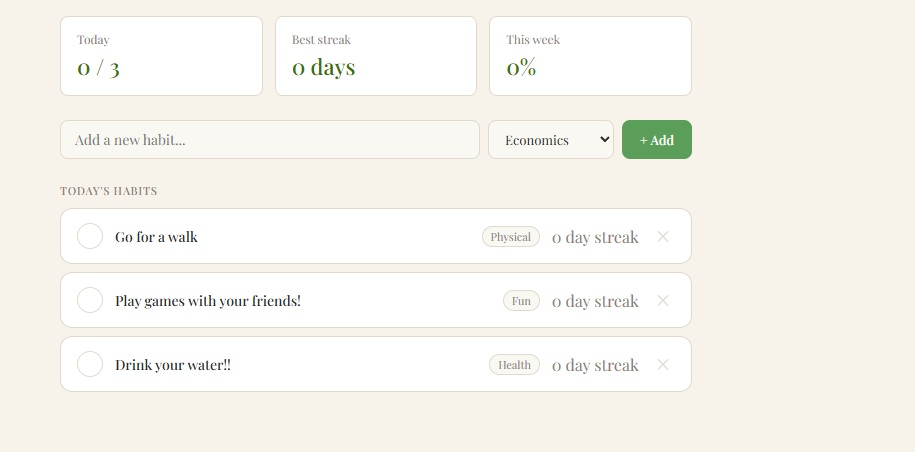

Example of habits
This is the Habit Tracker, it's a React project that uses Supabase as a backend host.
Where you can add your own habits and choose a category for the habit.
You get achievements for having created a new habit, doing the habit for a certian amount of days and a lot more.
The tracker also adds streaks to see how long you've done your habits and how many you've done in a week.